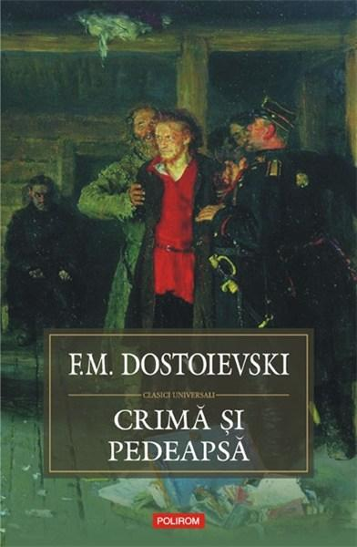
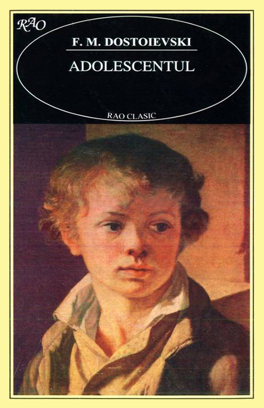
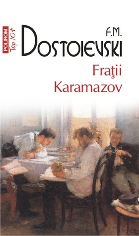

Crima si Pedeapsă
"Crimă și pedeapsă" este una dintre cele mai cunoscute și influente opere ale lui Fiodor Dostoevski. Romanul explorează profund psihologia personajului principal, Rodion Raskolnikov, un student sărac din Sankt Petersburg care își pune la îndoială convingerile morale și decide să comită o crimă pentru a-și demonstra teoria sa despre "oamenii extraordinari" care sunt deasupra legii. Însă, actul său criminal declanșează o serie de evenimente devastatoare și o confruntare internă cu sentimente de vinovăție și remușcare. Dostoevski abordează teme precum vinovăția, suferința și căutarea redresării morale într-un mod captivant și profund, oferind cititorilor o privire tulburătoare în sufletul uman.
Romanul "Crime and Punishment" este remarcabil nu doar pentru intrigă sa captivantă, ci și pentru portretizarea vividă a societății rusești din secolul al XIX-lea. Dostoevski surprinde în detaliu diferitele straturi sociale și comportamentele umane, punând în lumină corupția, disperarea și aspirațiile ideale care caracterizau acea epocă. Prin intermediul personajelor sale complexe și dialogurilor intense, autorul provoacă cititorii să reflecteze asupra eticii individuale și a consecințelor acțiunilor noastre în lumea înconjurătoare.
Pe lângă analiza profundă a condiției umane, "Crime and Punishment" reprezintă și o meditație asupra vinovăției și a procesului de regenerare morală. Dostoevski explorează complexitatea psihologică a personajului principal, Rodion Raskolnikov, oferind o imagine detaliată a luptei interioare dintre justificarea intelectuală a crimelor și conștiința morală. Romanul este un adevărat testament al talentului literar al lui Dostoevski, care a reușit să creeze o operă durabilă și captivantă, cu o relevanță și impact care persistă până în zilele noastre.
Adolescentul
"Adolescentul" este un roman semnificativ al lui Fiodor Dostoevski, care explorează perioada tulburătoare a adolescenței și conflictele morale ale tinerei generații. Povestea urmărește viața lui Arkadi Dolgoruky, un tânăr idealist care se confruntă cu dilemele identității și ale loialității în fața unui mediu social corupt și lipsit de valori autentice. Dostoevski surprinde în mod vivid tensiunile dintre generatii și complexitatea interacțiunilor umane, oferind o panoramă captivantă a Rusiei din secolul al XIX-lea.
Romanul "Adolescentul" se remarcă prin abordarea sa subtilă a psihologiei personajelor și prin analiza profundă a relațiilor interumane. Arkadi este prezentat ca un anti-erou complex, cu aspirații nobile și cu nevoia de a se afirma într-o lume în care moralitatea este deseori sacrificată în favoarea intereselor personale. Dostoevski explorează tema rebeliunii adolescenței și a căutării de sine într-un mediu marcat de ipocrizie și corupție, oferind o perspectivă dureroasă și realistă asupra experienței umane.
Prin acest roman, Dostoevski aduce în discuție dileme etice universale și își exprimă îngrijorarea față de direcția morală a societății contemporane. Romanul rezonează și în prezent, oferind cititorilor o privire introspectivă asupra procesului de maturizare și a luptei individuale pentru integritate morală în fața unui context social impregnat de corupție și manipulare. Această operă literară impresionantă completează moștenirea literară vastă a lui Dostoevski, onfirmându-l ca un maestru al analizei psihologice și al portretizării realiste a societății.
Fratii Karamazov
"Frații Karamazov" este una dintre cele mai celebre opere ale lui Fiodor Dostoevski, reprezentând o explorare profundă a naturii umane și a conflictelor morale. Romanul urmărește povestea tumultuoasă a familiei Karamazov, în centrul căreia se află trei frați cu personalități distincte și motive diferite: Dmitri, Ivan și Alexey (Alyosha). Dostoevski abordează teme fundamentale precum credința, moștenirea morală și responsabilitatea individuală prin prisma relațiilor tensionate și a dramelor interioare ale personajelor. Cartea explorează întrebări filozofice profunde legate de existență, liber arbitru și natura umană, oferind o panoramă captivantă a societății rusești din acea perioadă.
Totodata acest roman se remarcă prin stilul său narativ vivid si prin capacitatea autorului de a crea dialoguri memorabile și scene pline de intensitate emoțională. Fiecare frate este prezentat cu subtilitate și profunzime, reflectând diferitele aspecte ale condiției umane și oferind multiple perspective asupra problemelor morale și spirituale. Dostoevski construiește un tablou amplu al societății rusești, evidențiind tensiunile sociale și contradicțiile interioare, dar și posibilitatea de redimare și transformare a individului.
"Frații Karamazov" este o operă remarcabilă prin amploarea sa filozofică și umană, care continuă să fascineze și să provoace cititorii prin profunzimea temelor abordate și prin abilitatea de a captura frământările existenței umane. Prin intermediul acestei epopee literare, Dostoevski oferă o viziune profundă asupra dilemelor morale și a căutării spirituale, lăsând o amprentă indelibilă în peisajul literar mondial.